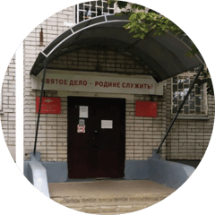

The injured Ukrainian soldiers taking up tattooing as a form of therapy
Kang-Chun Cheng
Inking is a vital means of expressing Ukrainian identity – but has also becoming an unlikely source of therapy for those wounded
The Stringer Foundation recognizes and supports courageous journalists.
A reporter is killed every three days. Get involved and support them.
标题之外
由 Stringer 基金会精选的报道。
Kang-Chun Cheng
Inking is a vital means of expressing Ukrainian identity – but has also becoming an unlikely source of therapy for those wounded

Eisa Dafalla
“There is a particular cruelty to safety when your family is dying.”

Anas Aremeyaw Anas
This documentary exposes corruption and political networks that facilitate illegal gold mining in Ghana. Through undercover reporting, it highlights the environmental damage, abuse of power, and the role of investigative journalism in promoting accountability.
Jason Motlagh
For the past two years, Haiti has experienced a reign of terror as rival outlaw bands battle in the streets of the capital with American assault rifles. The violence has led to a mass exodus of thousands of refugees fleeing to the United States border — and there's no end in sight.

Tatsiana Ashurkevich
This video investigation examines how Russian state-backed programs recruit children into drone-related military development. It reflects the work of Tatsiana Ashurkevich in long-form video and cross-platform investigative storytelling.

Tunde Omolehin
An undercover investigation at an Islamic centre in Gusau, northwest Nigeria, exposing how underage children are hired out to strangers for labour exploitation under the guise of religious education.

Franklin Vega
The investigation exposes international trafficking networks that smuggle endemic Galápagos iguanas into the illegal exotic pet market. Through documentary evidence and expert reporting, it traces how organised criminal groups exploit one of the world's most biodiverse ecosystems, highlighting the challenges of protecting endangered species and enforcing wildlife conservation laws.

Sophie Neiman
The documentary investigates allegations that dozens of suspected poachers have been killed in the name of wildlife conservation in Uganda. Drawing on years of field research, it examines the human rights implications of anti-poaching operations and the tensions between conservation and accountability.

Сніжана Мазур
The video tells the story of a Ukrainian soldier returning from captivity, capturing the emotional moment when his father learns that his son is alive. It highlights the human impact of war and the hope behind every prisoner exchange.

Cecilia Anesi and Zeynep Şentek
The investigation uncovers how Turkish criminal networks forged new alliances with Albanian, Italian, and Colombian traffickers to facilitate large-scale cocaine shipments into Europe through maritime "drop-off" operations.
Gunel Safarova
The documentary tells the story of a survivor of childhood sexual abuse, exploring the long-term impact of trauma, memory, and silence. Through an intimate visual narrative, it focuses on resilience, healing, and the enduring process of survival.

Ahmer Khan and Tom Vaillant
This interactive investigation documents the forced displacement of more than 20,000 families in India's Assam state through large-scale eviction campaigns. Combining field reporting, satellite imagery, and survivor testimonies, it examines the human rights impact of demolitions targeting predominantly Bengali-speaking Muslim communities.

Juan Pablo Barrientos and Miguel Ángel Estupiñán
The third book in the trilogy, documenting the canonical secret archive mandated by Canon Law Article 489, which every diocese in the world must maintain for clerical abuse proceedings. The book synthesizes seven years of investigation and litigation, names 700 accused priests, and explains the international architecture of concealment centered on the Vatican's Dicastery for the Doctrine of the Faith. It is the most comprehensive work on this subject published in Latin America.

María José Dugarte
The article presents the first family testimony identifying one of the Venezuelan migrants deported from the United States to El Salvador's CECOT prison. Through the account of Francisco García Casique's relatives, it documents concerns over deportations carried out without due process and the human impact on affected families.

Mais Katt and Loujeina Haj Youssef
The multimedia investigation reveals how different parties to the Syrian conflict have contributed to soil contamination across Syria. It documents the methods used to poison the land and presents evidence implicating militias as well as local and international actors, warning that affected soil may take decades to become suitable for agriculture again.

Carlos Martínez, Óscar Martínez, Víctor Peña, Efren Lemus, Omnionn, and Nelson Rauda
This three-part video interview features a former Barrio 18 leader who alleges that gang leaders maintained years-long agreements with the political circle of President Nayib Bukele. Through first-hand testimony, the series examines the alleged negotiations, political support, and protection that shaped relations between gangs and the Salvadoran government.

Nayeli Roldán and Ana Lambarri
This two-part investigation examines how budget cuts, failed procurement policies, and corruption contributed to Mexico's healthcare crisis, leaving millions without medicines and timely medical care. Based on official records and extensive data analysis, it documents the human impact of shortages and exposes irregularities in government pharmaceutical contracts.

Victor Ilie
This investigative series uses OSINT, financial records, and cross-border reporting to uncover Russian influence operations in Romania, tracing disinformation networks, advertising platforms, financial flows, and links to pro-Kremlin political actors. The investigation significantly advanced public understanding of Russian interference in Eastern Europe.

Anna Ryzhkova
The investigation reveals how Russia has turned military recruitment into a referral-based business, with civilians earning bonuses for persuading others to sign contracts with the Ministry of Defense. It documents how financial incentives have created a nationwide recruitment network involving ordinary citizens, local influencers, and former professionals.

Romita Saluja
This long-form investigation reveals how India's stone mining industry circumvented modern slavery laws to exploit child labour. The reporting exposed the links between global supply chains and labour exploitation, earning the Save the Children Global Media Award 2024.

Désiré Nimubona
Written during Burundi's 2015 political crisis, the article outlines the key elements needed for an inclusive peace process, including accountability, human rights, press freedom, and refugee return. It offers a roadmap for ending the violence and promoting long-term national reconciliation through dialogue

Claire Wilmot and Ashenafi Endale
The investigation exposes how illegal gold mining in Ethiopia's Tigray region is driven by alliances between foreign investors, mining companies, and local military networks. It documents how the illicit trade is fuelling conflict, environmental destruction, and human rights abuses in the aftermath of the civil war.

Naqaa Sammour
The video documents the impact of the Israeli military bombardment on Gaza, focusing on the area where the journalist reports. Through a personal and visual account, it traces how daily life has been transformed by the conflict, highlighting the devastating effects of the ongoing military operations on civilians.

Franck Zongwe Lukama
The investigation documents a deadly health crisis in Bomate, Democratic Republic of the Congo, where more than 450 people reportedly died within two months under suspicious circumstances. Through field reporting and eyewitness testimonies, it examines allegations of water contamination, environmental negligence, and the failure of authorities to investigate or respond to the tragedy.